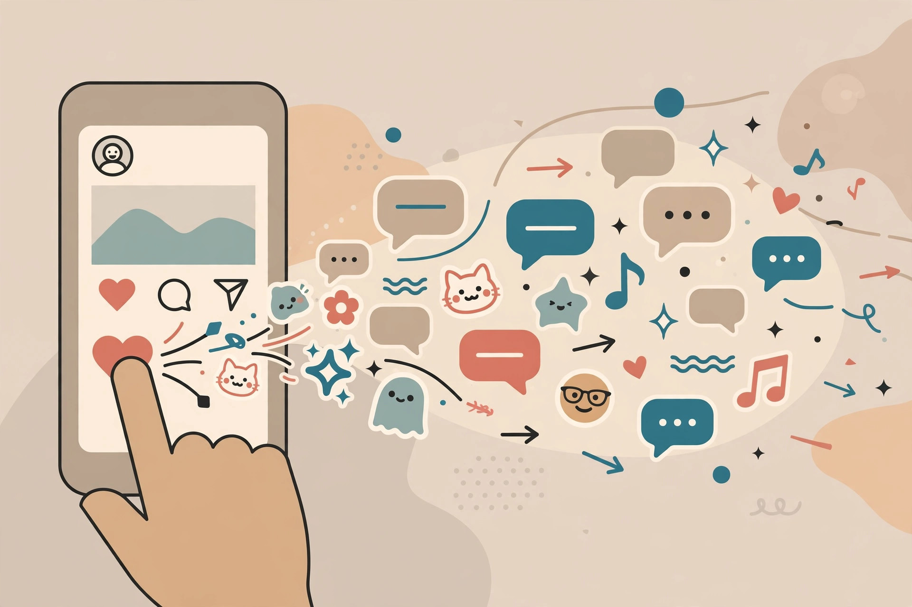

いいねを押すと、設定したキャラや動物のスタンプが表示される新機能。「自分のスタンプは見える？」と試してみる投稿が相次ぎ、確認と試行の連鎖が起きている。Mrs. GREEN APPLEのファンが「いいねを押すとりんごになる」と気づいて広めるなど、推し活と結びついた楽しみ方も広がった。
サーバーの不具合で、Teamsなどに接続障害が発生した。朝の業務時間帯と重なり、「使えない」という実況が続く一方で、それをネタに変える投稿も混じる、愚痴とユーモア同居の空気に。
公的な啓発キャンペーンへの起用が話題に。並行して、チケット譲渡の投稿もタイムラインを流れている。
スターダスト所属のEBiDANが紅白初出場を決めた。M!LKは2年連続の出場になる。
Threadsでは、推し活のソンムル（手作り配布物）として登場。コンサート会場での交換用に、スクイーズ入りのチャームを自作する投稿が見られた。Instagramでは開封・ASMR的に握って触感を見せるリールが中心。GUGU Studioの和菓子・デザート型スクイーズ、TOKO TOYZ「スイスロール&バター」ブラインドボックスの開封、ロート「リセ」の目薬ボトル型スクイーズ（11/27・28に原宿カフェでイベント、来場者に配布）、ダイソーの「バイラル スクイーズペン」（200円）など。論調はやさしく、癒やし・ASMR寄り。「おすすめのスクイーズを教えて」など布教・共有の語り口で、女性寄りの発信者が多い印象。
この日は個別投稿ノートの記録がありません（観測初期のため、定性観測まとめのみ）。
この日は論争・愚痴として特記された記録がありません。
スタンプ機能＝遊び・試行、障害＝愚痴＋ユーモア、スクイーズ＝癒やし・布教
スタンプ機能は幅広い層（海外含む）。スクイーズは女性寄り・若年層寄りの印象。MS365障害はビジネスパーソン寄り。統計ではなく印象。
示唆 1. Threadsの「いいねスタンプ」は、プラットフォーム側の小さな仕掛けが「試してみる」連鎖を生み、推し活（りんご＝Mrs. GREEN APPLE）と結びついて拡散する例。仕掛けは「自分のものにできる」余白があると広がりやすい。
示唆 2. スクイーズは「触感を言葉と音で伝える」コンテンツが定着し、開封・ASMRが購買の入口になっている。触感グッズはレビューよりも「握る様子そのもの」が訴求力を持つ。
示唆 3. 障害・不具合の話題は愚痴とユーモアが同居し、ミーム化しやすい。BtoBでは障害時のコミュニケーション自体がブランド印象に直結する。